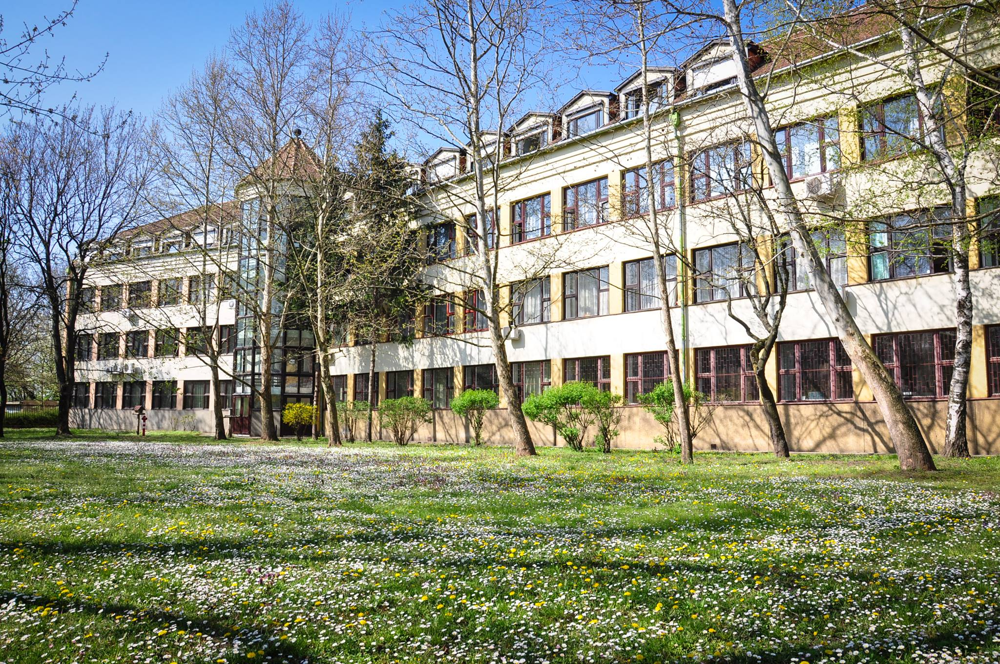

Gimnázium A pécsi Babits Mihály Gyakorló Gimnázium (hivatalos nevén Pécsi Tudományegyetem Gyakorló Általános Iskola, Gimnázium és Óvoda, Babits Mihály Gyakorló Gimnázium) a Pécsi Tudományegyetem négy osztályos gyakorlóiskolája.  Az Uránváros ligetes övezetében található intézményben a 9. évfolyamtól emelt szintű képzést biztosít angol, német, biológia, fizika, matematika, informatika és művészeti (irodalom, ének-zene, rajz és vizuális kultúra, dráma) tantárgyakból. A 11. évfolyamtól kezdődően a tanulók választásuk alapján készülhetnek a közép és emelt szintű érettségi vizsgákra. Az intézményt a HVG Magyarország 100 legjobb vidéki gimnáziuma között listázta 2014-ben. Középiskolai tanulmányaimat ezen iskola padjaiban töltöttem, egészen az érettségiig, amit 2020. májusában írtam. Emelt szinten érettségiztem matekból és angolból, amiből emelt-szintű nyelvvizsgát is szereztem.
Egyetem A Budapesti Műszaki és Gazdaságtudományi Egyetem (rövidítve: BME vagy Műegyetem) Közép-Európa és Magyarország egyik legnagyobb presztízzsel rendelkező műszaki egyeteme, 1782-es alapításával a világ első műszaki egyeteme (pontosabban az első olyan intézmény, amely egyetemi keretek között, egyetemi struktúrában folytatott mérnökképzést). Nyolc karával és több mint 24.000 hallgatójával Magyarország egyik legnagyobb egyeteme. Egyetemi tanulmányaimat 2020-ban kezdtem a gépészmérnöki karon, energetikai mérnök golyaként.